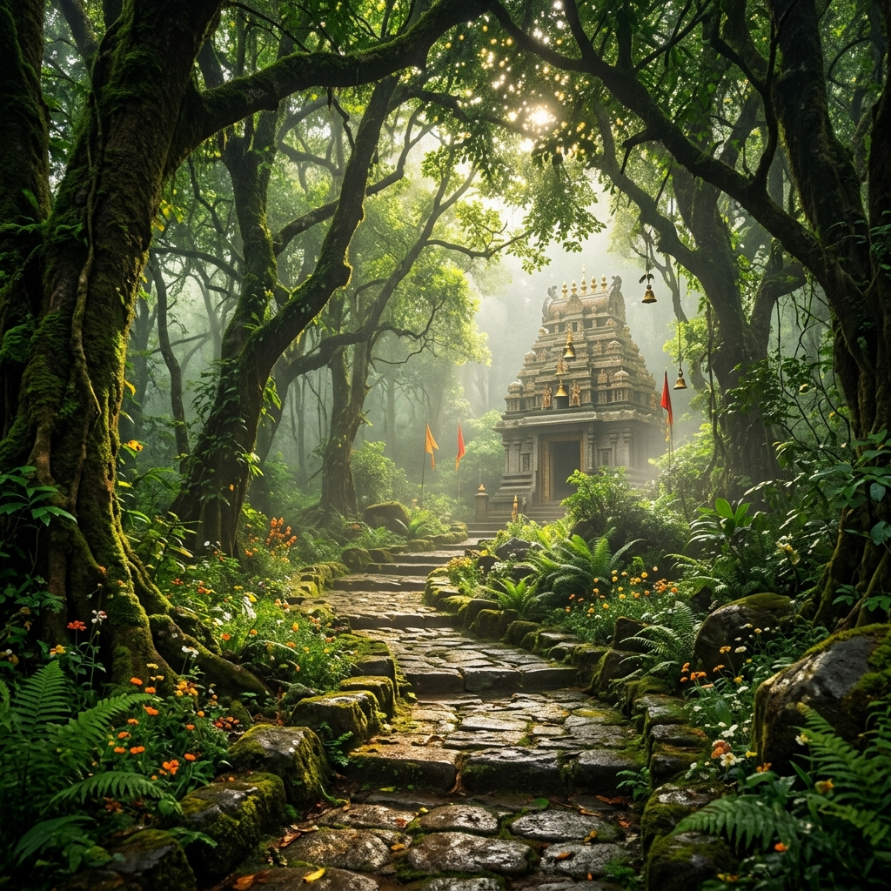

Discover What Makes
This Temple Unique
From the divine presence of Lord Vishnu to the enchanting forest that cradles this sacred site, every aspect of Sri Anantha Padmanabha Temple is a wonder to behold.
Lord Vishnu
The presiding deity, Lord Anantha Padmanabha, rests in eternal repose upon the serpent Anantha Shesha. The divine idol radiates a serene, transcendent energy that inspires deep devotion and wonder.

Forest Location
Enveloped by a pristine, dense forest teeming with biodiversity, the temple's location is a natural sanctuary. Ancient trees stand as silent guardians, and the air is alive with the melodies of exotic birds.

Sacred Atmosphere
The convergence of spiritual chanting, flickering oil lamps, fragrant incense, and the surrounding forest creates an atmosphere of profound sacredness that touches every visitor's heart.

Pilgrimage Destination
Revered as a significant pilgrimage destination, devotees embark on the journey to seek blessings, fulfill vows, and experience the divine grace of Lord Padmanabha in this extraordinary forest setting.